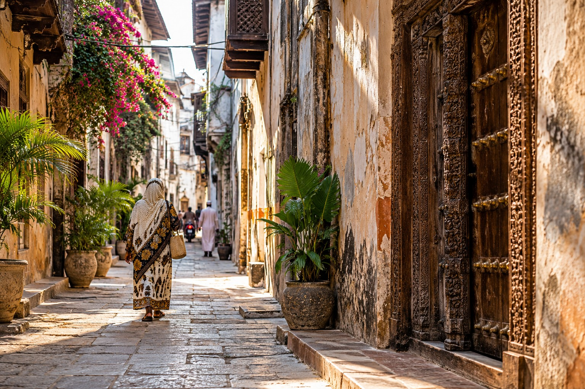

Stone Town · Zanzibar City
A city read on foot.
Stone Town is a living Swahili trading city, not a monument district. Its lanes, houses, shopfronts, religious buildings, markets and seafront record centuries of Indian Ocean exchange while still functioning as everyday urban space.

Read the
layers.
Stone Town is strongest when the streets are read as evidence: trade, religion, migration, slavery, architecture, food and ordinary life occupying the same narrow geography.
What makes Stone Town different
Meaning is hidden in ordinary streets.
The city becomes more useful when architecture, trade, markets, slavery/abolition history and public life are read together rather than reduced to carved doors and a few landmark buildings.
Lanes, courtyards, barazas and thresholds explain how the city works socially as well as visually.
Coral-rag walls, timber, carved doors and shopfronts show long exchange without reducing the city to one cultural source.
Slavery and abolition belong in the city's history, but should be interpreted rather than sensationalised.
Food, seafront public life and unstructured walking give Stone Town a different rhythm after day visits end.
Urban intelligence
Five layers inside the same city.
Select a layer to see what a guide can reveal, what is worth noticing independently, and why Stone Town should be read as a living urban system rather than a list of attractions.
Time & method
How long does the city actually need?
A few hours can orient you. One night lets the city breathe. Two nights separate interpretation from wandering. Beyond that, additional time should be earned by real interests in food, architecture, photography or urban history.
Historical memory
The harder history is part of the city.
Stone Town's importance in the East African slave trade and later abolition cannot be treated as an optional dramatic stop. The subject deserves careful local interpretation, factual restraint and enough time to understand the wider trade and power system around it.
Interpretation matters more than spectacle.
We do not use slavery history as emotional marketing. A strong visit makes room for it because it is part of the city's actual history.
Island composition
Three legitimate roles for Stone Town.
Stone Town can lead into the beach, stand alone as a short city stay, or be omitted when pure safari recovery is the priority. It should not be forced into every Zanzibar route.
History before the beach.
In the operated couple journey, Stone Town deliberately came before Nungwi. That sequencing allowed Zanzibar to begin as an urban and historical chapter before the trip shifted into sea, rest and easier swimming.
Open the operated journey →Stone Town composer
How much city should your Zanzibar stay contain?
The result combines time, interest and onward coast. It can recommend one night, two nights, a focused half-day, or no Stone Town at all when recovery matters more.
Answer the four questions.
We will suggest how much Stone Town should enter the itinerary.